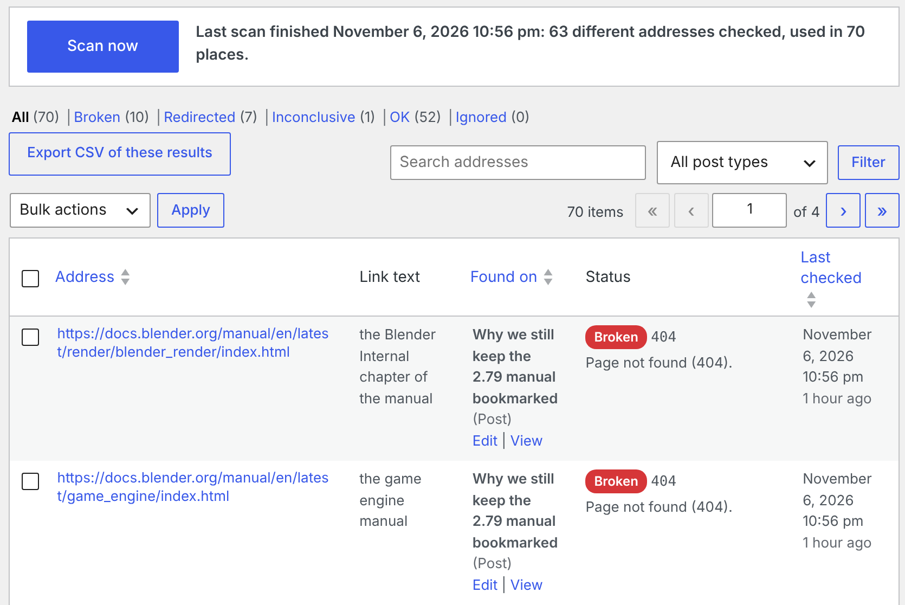
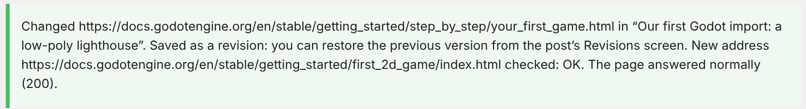
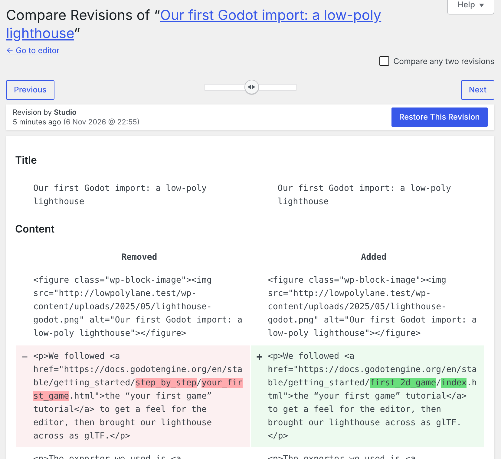
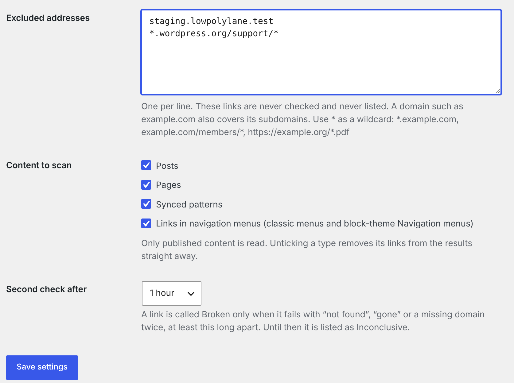

Linkrounds, a broken link checker for WordPress

Finds broken links and images from your own server, and calls a link Broken only after it fails twice, an hour apart. No account, no credit card, no link limit.
Linkrounds is free. Download linkrounds-1.1.0.zip (66 KB) and install it under Plugins > Add New Plugin > Upload Plugin. WordPress 6.5 or newer, PHP 7.4 or newer. The WordPress.org listing is not live yet.
Linkrounds Pro: $19, one-time, for up to 3 sites. Scheduled full scans, an email report of what broke since the last one, and CSV export. An add-on to the free plugin.
Polar checkout · download after payment · no renewal · no licence check · 14-day refund · details
Four answers, in plain words
- Broken: not found (404), gone (410), or the domain does not exist, and the same thing happened again on a second check at least an hour later (1, 6 or 24 hours, you choose).
- Redirected: the address forwards to one that works. The final address is shown.
- Inconclusive: the other site blocked the check (403, 999), wanted a login (401), asked us to slow down (429), had a server error, or did not answer in time. The reason is given. These are never counted as broken.
- OK: the link works.
Each row shows the page the link is on (with Edit and View), the full address, the link text, the status code, the reason and when it was last checked. Filter by answer or post type, search by address, and use Re-check now on any row.
Above: Tools > Linkrounds on the demo blog described below, after the second checks, with Linkrounds Pro active (hence the Export CSV button).

Fixes you can undo
- Unlink removes the link and keeps the words. Edit address changes that one link, and the new address is checked straight away.
- Bulk actions change only the rows you ticked. In our tests, ticking 2 of 20 visible rows on a site with 300 results changed exactly 2 links.
- A fix changes only that link in that post and leaves the rest of the content byte for byte as it was. In Cover, File and Navigation link blocks, Edit address also updates the block's own copy of the address, so the editor still opens the block normally; Unlink is not offered where it would break a block (File and Button blocks).
- Every fix is saved as a normal post revision, so you can restore the old version from the post's Revisions screen, even on sites that keep only one revision.
- Only users who can edit a post can fix its links.



Exclusions and automatic re-checks
- Exclude domains or address patterns with
*wildcards (for example*.example.comorexample.com/members/*), whole post types, synced patterns or menu links. - Ignore a single link, and undo that from the Ignored filter.
- Broken and Inconclusive links are re-checked every day. Saving a post re-checks its links, so fixed links leave the list without a new scan.
- If the host kills a background batch, the scan picks itself up again.

Gentle on your server
- The scan runs in small background batches through WP-Cron, with a live count and Pause and Resume.
- Links to your own posts, pages and uploads are checked against your own database and files, with no request to your site.
- Each address is requested once per scan. At most six requests run at once, and at most two go to the same site.
- A batch starts no new request after 10 seconds and ends within about 25.
- Addresses in private or local networks (10.x, 192.168.x, 127.0.0.1) are never requested.
Linkrounds Pro
A separate add-on that needs the free plugin. It adds a Schedule & email tab and an Export CSV button.
- Scheduled full scans: daily, weekly (on a chosen day) or monthly (on a chosen day, 1 to 28), at the hour you choose in your site's time zone. Daylight-saving changes keep the wall-clock hour.
- Email report: after each scheduled scan, once the links that failed have had their second check, the addresses you choose get a plain-text email listing the links that broke since the last report, the page each is on, the reason, and a link to the results screen. It is sent through your site's own
wp_mail(). - Export CSV: the rows of the current filter (all pages), UTF-8, with a header row. Cells that start with
=,+,-or@are prefixed so spreadsheets do not run them as formulas. - No renewal and no licence check. Pro makes no network calls of its own, and nothing stops working.

The first report email from the demo blog, in full
To: studio@lowpolylane.test, client-editor@lowpolylane.test Subject: [Low Poly Lane] Linkrounds: 8 links broke since the last report Linkrounds finished a scheduled check of every link on Low Poly Lane (http://lowpolylane.test/) on November 6, 2026 10:57 pm. This is the first report, so it lists every link that is broken now: 8. 1. https://docs.blender.org/manual/en/latest/render/blender_render/index.html On: “Why we still keep the 2.79 manual bookmarked” http://lowpolylane.test/why-we-still-keep-the-2-79-manual-bookmarked/ Link text: “the Blender Internal chapter of the manual” Why: Page not found (404). 2. https://docs.blender.org/manual/en/latest/game_engine/index.html On: “Why we still keep the 2.79 manual bookmarked” http://lowpolylane.test/why-we-still-keep-the-2-79-manual-bookmarked/ Link text: “the game engine manual” Why: Page not found (404). 3. http://lowpolylane.test/wp-content/uploads/2025/05/turntable.png On: “Cycles or EEVEE for product turntables?” http://lowpolylane.test/cycles-or-eevee-for-product-turntables/ Link text: “Cycles or EEVEE for product turntables?” Why: The file is not in this site’s uploads folder. 4. https://github.com/WordPress/twentytwelve On: “Moving the studio site to a block theme” http://lowpolylane.test/moving-the-studio-site-to-a-block-theme/ Link text: “development repository” Why: Page not found (404). 5. https://docs.blender.org/manual/en/latest/addons/import_export/scene_gltf2.html On: “Where to ask when Blender misbehaves” http://lowpolylane.test/where-to-ask-when-blender-misbehaves/ Link text: “the glTF add-on page in the manual” Why: Page not found (404). 6. https://docs.blender.org/manual/en/latest/files/import_export/scene_gltf2.html On: “Resources” http://lowpolylane.test/resources/ Link text: “glTF import and export” Why: Page not found (404). 7. https://docs.godotengine.org/en/stable/getting_started/step_by_step/your_first_game.html In a navigation menu, item “Godot tutorial” Why: Page not found (404). 8. https://docs.godotengine.org/en/stable/getting_started/step_by_step/your_first_game.html In the navigation menu “Main”, link “Godot tutorial” Why: Page not found (404). See and fix them: http://lowpolylane.test/wp-admin/tools.php?page=linkrounds&category=broken You get this email because your address is set under Tools > Linkrounds > Schedule & email. Change the addresses or turn the schedule off there.
Captured on the demo site, where wp_mail() writes to a file instead of a mail server. The scheduled-scan event was run by hand rather than waiting for Monday, and the report event was run without the usual 65-minute wait; both ran Pro's own code. Two of the ten Broken places had been fixed a minute earlier, so the report lists eight.
Tested on a real site
Every image on this page is a screenshot of a real WordPress 7.1.4 site, running locally on PHP's built-in server with the SQLite Database Integration plugin, taken in Chromium under a virtual display on November 6, 2026, with Linkrounds 1.1.0 and Linkrounds Pro 1.0.1 installed from their zips. The site is "Low Poly Lane", a demo blog of a small 3D studio: 12 posts and 2 pages from 2019 to 2025, a menu, and links to real Blender, Godot and WordPress documentation, some of which has since moved or gone.
| Answer | First scan, 9:52 pm | After the second check, 10:53 pm |
|---|---|---|
| Broken | 0 | 8 addresses (10 places) |
| Redirected | 7 places | 5 addresses (7 places) |
| Inconclusive | 11 places: 10 failures waiting for the second check, 1 refused (403) | 1 address (1 place), the 403 |
| OK | 52 places | 49 addresses (52 places) |
63 addresses in 70 places. We opened every Broken address by hand at 10:55 pm with a browser User-Agent: the seven web addresses all returned 404, and the eighth is an image we had deleted from the uploads folder. The one Inconclusive address, registry.khronos.org/glTF/, refused us with 403 by hand too.
Details
- Buying Pro: secure checkout by Polar, which delivers
linkrounds-pro.zipafter payment. Linkrounds Pro has no licence check. $19 once, for up to 3 sites; no renewal. If it doesn't work as described and we can't fix it, email us within 14 days of purchase for a full refund (terms). Questions first? support@ochrestack.com. - Requires WordPress 6.5 or newer and PHP 7.4 or newer. Tested on WordPress 6.5 and 7.1 with PHP 7.4 and 8.3: both plugins install through Upload Plugin and activate with no PHP notices.
- GPL-2.0-or-later. The full, readable source of each plugin is inside its zip.
- Support: support@ochrestack.com. Bugs and feature requests welcome at the same address.
What it sends over the network
To check a link, Linkrounds sends a HEAD request from your server to the linked address (and a GET when HEAD does not succeed), with the User-Agent Mozilla/5.0 (compatible; Linkrounds/1.0; link check). This happens during a scan, on Re-check now, in the daily re-check, and when you save a post that contains links (from activation, even before the first scan). Nothing else is sent: no data about your site, your users or your content goes to Ochrestack or to any other service. There is no account, no telemetry and no update or licence check. Pro's email report goes only to the addresses you set, through your site's own mail setup. Results stay in two tables in your own database and are removed when you delete the plugin.
Documentation
The one-page Linkrounds quick start covers installing, the first scan, the four answers, fixing and undoing, exclusions and Pro.
Install
- Download linkrounds-1.1.0.zip. Do not unzip it.
- In WordPress, open Plugins > Add New Plugin > Upload Plugin, choose the zip, Install Now, Activate.
- Open Tools > Linkrounds and click Scan now.
- For Pro, install
linkrounds-pro.zipthe same way after the free plugin, then open Tools > Linkrounds > Schedule & email.
Known limits
- Not checked in version 1: custom fields, page-builder data stored outside the post content, widgets, comments, theme options, excerpts, templates and template parts edited in the Site Editor,
srcsetimage sets, and video or embed addresses. If a builder keeps its links in the post content they are found, but editing inside a builder layout is not offered, and an Unlink inside a third-party builder block can leave that block needing repair. - WP-Cron runs when someone visits the site. On a very quiet site, keep the Linkrounds screen open while it scans (the screen keeps it moving), or set up a real cron job for
wp-cron.php. - A site that serves 404 to anything but a browser ends up Broken although readers see the page. Linkrounds says honestly that it is a link checker and does not pretend to be a browser. Open the link; if it works, Ignore it.
- A deleted page that forwards to its site's home page is Redirected, not Broken; the reason says it lands on the home page.
- A server that never answers HEAD requests leaves its links Inconclusive ("no answer within 15 seconds"); they are never called Broken.
- A missing file in your uploads folder is Broken from the disk check alone, so a redirect for the old file address is not seen.
- Menu items have no revisions in WordPress; the message after a menu fix says so.
- No network-wide view on multisite; it works per site.
- Linkrounds never highlights or strikes through links on your site and adds no dashboard widget.
Questions
Do I need an account, an API key or a credit card for the free plugin? No. It runs inside your WordPress site. There is nothing to sign up for and no link limit.
Is Pro a subscription? No. $19 once, for up to 3 sites. There is no renewal and no licence check, and nothing stops working.
A link works in my browser. Why is it Inconclusive? Many sites refuse automated checks (403, 999), ask for a login (401) or slow down busy visitors (429). Linkrounds can't tell whether such a link works, so it says so instead of calling it Broken.